00 · OVERVIEW
我們如何確定自己是好人？
開場的投影片問了一個問題：普通人為何接受納粹？1930 年代美國社會學教授阿貝爾（Theodore Abel）在德國徵文，收到 600 篇〈我為何成為納粹〉，答案是三件事：受創的自豪感、對社會的憤怒與恐懼、渴望一個「救世主」。整場講座就是看這三種情緒怎麼被一步步組裝成政權——而且每一步的手法，今天都還在用。
尋找「使命」
1914 — 1923一個被時代拋棄的失敗畫家，在戰壕裡第一次被接受；戰敗之後，那份歸屬感變成「我們被出賣了」。
CH 2尋找「共鳴」
1923 — 192525 人的小酒館、烏合之眾、卡尼薩三角、民粹的定義，以及通膨和一場失敗的政變怎麼把他變成全國紅人。
CH 3重複、重複、重複
1926 — 1933戈培爾登台：連結與衝突、政治漫畫、口號。1929 年之後，一場精心設計的造勢晚會與光之大教堂。
CH 4最後掙扎
1933投影片大綱裡的第四階段，現場因為時間直接收進結論：民粹三大特徵，以及台灣天生的武器。
CH 1 · 1914 — 1923
尋找「使命」
一個沒有方向的年輕人，在戰爭裡第一次找到歸屬感；戰敗之後，那份歸屬感變成憤怒。這一章的重點不是希特勒有多壞，而是「使命感」這種東西是怎麼被製造出來的。
太平景象的幻滅
海獅先生說這一章一手史料特別多，「大家應該會想抄下來」。開場是奧地利作家茨威格——猶太人，納粹上台後逃到西方，寫下回憶錄《昨日世界》。他筆下 19 世紀末的歐洲：電話、汽車、自來水、爐灶生火，「所有這些奇蹟都是科學和進步的天使所創造出來的」。中世紀基督教的末日審判觀，被科學革命與啟蒙運動換成了「明天一定比今天更好」；倫敦、巴黎、柏林、維也納，都是 19 世紀才變成現在的樣子。
但茨威格也寫了：太平景象本身就藏著危機。海獅先生把這句話拉到今天：「我們現在在台灣，爽死」——他十年前在德國時覺得台灣處處比不上（德鐵那時真的不會遲到），這次回來卻是台積電。可是景氣好的時候人不是樂觀，是焦慮和貪婪：看到所有人都賺得比你多，「我到底做錯了什麼」，社群媒體把這種焦慮放大，所以景氣好的年代顯化、身心靈特別多。1914 年前的歐洲也一樣：瓜分完中國之後，各國越來越激進，都相信最後一秒對方會退讓，都在等「那場結束所有戰爭的戰爭」。
然後是 1914 年 7 月：幾年來最溫暖的夏天，茨威格坐在公園裡讀書（「現在誰在公園裡讀書？」），街頭音樂家的音樂突然停了，所有人擠在一張告示前——斐迪南皇儲夫婦在塞拉耶佛被刺殺。
「人們不相信歐洲各民族之間還會有戰爭，就像不相信世上還有鬼怪一樣。」
茨威格《昨日世界》，投影片引文
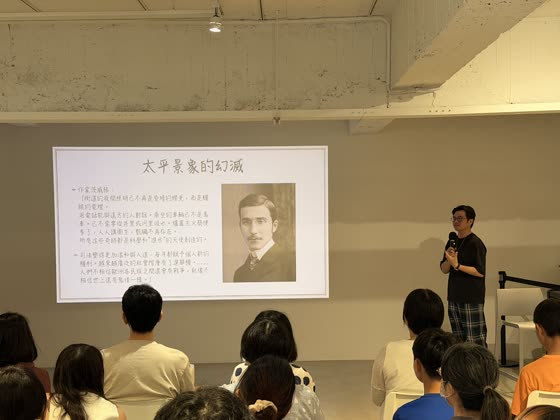
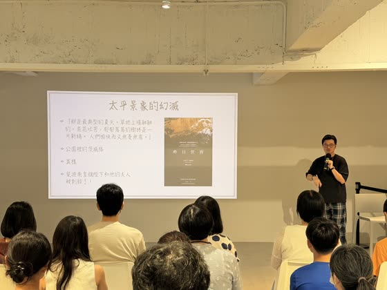
戰爭：漫長的虛無
推薦 Netflix 的《西線無戰事》：主角一開始是 16、17 歲的高中生，演員看起來完全不像 16 歲——「大家相信我，德國人 16 歲就長這個樣子，187 公分」。德國人興奮地以為戰爭幾個月就結束，結果打了四年；壕溝、毒氣、坦克，所有人都覺得這是地獄。作者雷馬克把主角寫死在戰爭最後一天，他自己卻活過了兩次大戰。
就在這樣的戰場上，卻有一個人「過得不能說非常開心，但終於找到自己人生的意義」——一個失敗的美術家。
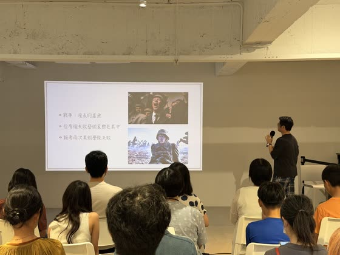
維也納的低谷
投影片上是四歲的希特勒。現場互動：他出生在哪？（答對的獎品是海獅先生剛從德國帶回來的零食。）不是林茨——他在林茨長大，出生地是奧地利邊境小城布勞瑙，現在人口才 18,000，「成大學生可能都有 19,000」。他人生唯一開心的事是畫畫，所以去報考奧地利最高的藝術學府維也納美術學院。
海獅先生放了他的畫請大家舉手投票：覺得好的、覺得不好的。結論是「沒有個人表現」——畫的是慕尼黑國立劇院和 HB 啤酒館，海獅先生實地去過，最明顯的感覺是「他畫的人數量真的太少了」。第一次報考時教授看第一張還不錯、第二張有點怪，叫他畫人像，畫出來極醜（維基百科上找得到）。教授看出致命傷：希特勒讀不出人類的表情——童年被霸凌、一直一個人過，沒辦法解讀別人的喜怒哀樂。想到這裡會毛骨悚然：他心中的理想世界，是建築漂亮、風景漂亮、毫無人煙的地方。
第一次落榜，父親已過世，極度寵他的母親說「沒關係，明天再考一次，我們永遠支持你」；半年後母親因乳癌過世，他在墳前發誓隔年再考。第二次更慘，書面審查就被刷掉。教授直說：美術學院不可能了，畢業生的出路是幫有錢人畫肖像，沒人靠畫建築賣錢；「你畫建築有點天分，去建築學院吧」——但他只有小學學歷，這條路也堵死。
海獅先生的詮釋：時代進步越快，被落在時代之後的人就越多。照相術發明後，精確描繪細節不再重要；19 世紀的重點是印象派、野獸派、立體派、克林姆——畫家怎麼詮釋世界。「跟我們現在有點像：重點已經不是怎麼獲得知識，而是用知識怎麼詮釋這個世界。」被時代拋棄的希特勒在維也納流落街頭，有人塞給他一本小冊子：日耳曼民族主義。
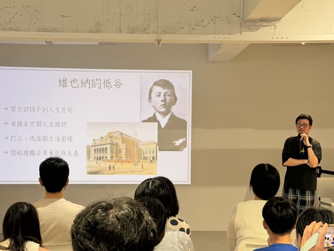
第一次找到歸屬感
一戰爆發，奧地利人理論上該加入奧軍，但他覺得奧地利太多猶太人和斯拉夫人，跑到慕尼黑加入德軍，被送到「西部戰線」。第一個禮拜就遇上大型會戰，3,600 人死到剩 600 人，他是倖存者之一。
海獅先生用當兵做類比：大多數人當兵是「來還債的」，但有一種人真的非常熱衷，匍匐前進都做得極認真——這種人在軍營裡不會被欺負，只會被當「指導」。希特勒 20 年人生第一次被接受，在戰爭裡感受到「使命的召喚」。
更重要的是戰場上特殊的同袍情誼。有個美國教授問二戰的德軍退伍兵：美蘇都快把德國夾掉了，你們為什麼還不逃、希特勒的洗腦到底多強？老兵大笑：「我們才不是為了希特勒，我們不能拋下自己的同袍。」一戰的士兵都在講同一件事：遇到困難時貴族身分幫不了你、錢也幫不了你，只有一起分享過同一個戰壕的人是生死與共的兄弟。
1917、18 年他在一次進攻中一個人俘虜了 15 個敵軍，拿到士兵極少見的一級鐵十字勳章，當了元首之後仍然每天掛在身上。人生第一次感到自己有價值。
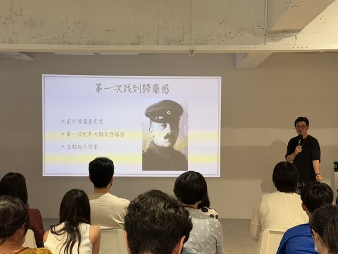
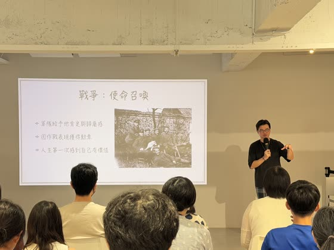
帝國崩潰，與拯救還能拯救的東西
1918 年初德國情勢還很樂觀——地圖上深綠是德國、淺綠是同盟國，版圖非常大。蘇聯退出戰場，但美軍要來了，德軍做了一個合理的決定：在美軍抵達前發動最大攻勢，1918 年 3 月的皇帝會戰。一小時內朝英法陣地發了 100 萬發砲彈——有一張照片是兩顆砲彈在空中對撞、交叉穿在一起，至今還在戰爭博物館。德軍一路壓到離巴黎只剩約 50 公里，然後英法反攻。全國的賭注徹底失敗。
希特勒此時中了毒氣躺在醫院。國內，軍方撒手不管，把請求停戰的燙手山芋交給左派的社民黨。海獅先生停下來解釋左右派：台灣所有主要政黨其實都是右派，所以不好想像。他給了一個「你們這輩子都忘不掉」的比喻——台北捷運的手扶梯：右邊站著不動（右派：維持現狀、維持體制），左邊往前走（左派：改變現狀）。
接手的是社民黨的艾伯特，海獅先生說看到他的照片就覺得「這個人的人格到底有多高貴」。社民黨的目標本來就是推翻帝制，帝國要倒了，等它自己垮就贏了，黨內都說不要出來。艾伯特回：「這不是政黨的問題，這是祖國的問題。祖國有難就該義不容辭，拯救還能拯救的東西。」（海獅先生：德國政治人物很常做這種事。）
最後一個月，基爾港的水兵不想出海送死，革命染紅全德國，到處喊要學蘇聯。艾伯特怕德國變成蘇聯，請德皇退位；請了三次德皇視若無聞，總理乾脆直接宣布德皇已經退位。德皇看報紙才知道自己退位了：「可恥！」總理下台時對艾伯特說：「艾伯特先生，我把德意志帝國交給你保管了。」
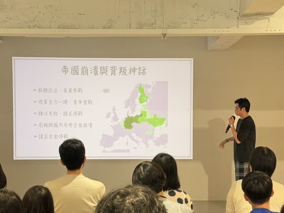
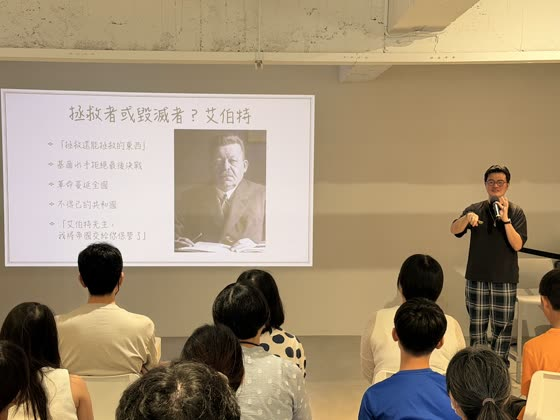
憤怒的希特勒：背後一刀
《我的奮鬥》裡寫，他在醫院聽說海軍在醞釀起事，以為是謠言；11 月 10 日一位老牧師來病房，聲音顫抖、帶著哭腔說：祖國已經變成共和國了。在希特勒的認知裡：左派政府 → 一個月後投降 → 簽下喪權辱國的凡爾賽條約，所以「一切都是左派害的」。但其實是軍方先把單子丟下來的。
「於是，一切都成為泡影了。我們所有一切犧牲和困苦，完全等於虛擲……在那些人就是無情義的惡棍！因為當他們和德皇握手的時候，另一隻手已經在暗中掠取利刃了！」
希特勒《我的奮鬥》，投影片引文
這就是最有名的「背後捅刀」陰謀論的起點：一個把全部自我價值押在戰爭上的人，無法接受「我們就是打輸了」，所以需要一個背叛者。
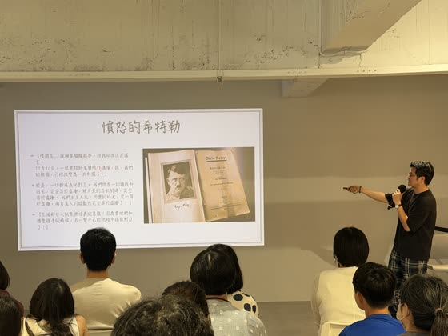
反思：歷史事實 vs. 歷史解釋
第一章收尾的投影片放的是「柯文哲 清清白白」的看板。海獅先生說前一晚做投影片時猶豫了很久會不會尷尬，「昨天晚上我還很勇敢，有人叫我不要放，我說有什麼關係，真理無懼」。他要講的是歷史系的基本功：歷史事實是發生過的事、可以驗證；歷史解釋是每個人怎麼詮釋它，永遠不會一樣。同一個判決，在其他人眼裡和在小草眼裡完全是兩件事。「沒有要攻擊台灣任何政黨，等一下還會拿民進黨的例子。」
人們之所以會相信一件事情，不是根據他看到的證據，全部是因為他想要相信。
反思頁的最後一句
所以在台灣（「台灣永遠都在選舉」）跟人討論政治時，與其直接反對或吵架，不如想他為什麼這麼堅持——是不是動搖到他的價值觀。怎麼破解？不是反駁，是順著他講、不斷發問，問到最後理論自己說不過去，讓他自己發現。這叫蘇格拉底式提問：蘇格拉底從不告訴你幸福是什麼、勇敢是什麼，他只問「那你覺得幸福長怎樣？」
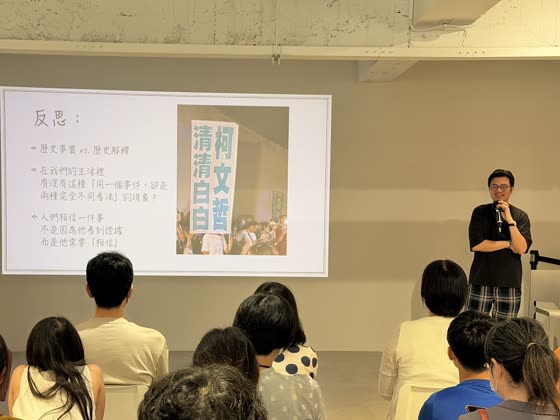
CH 2 · 1923 — 1925
尋找「共鳴」
《我的奮鬥》裡，希特勒說他是從那時候找到自己的理念：恢復德意志的榮光。海獅先生說，所有能感動人心的政治運動都是先有理念，「台灣的主要政治人物不太重視理念，比較常是對方說什麼我都反對」——先搞清楚自己的理念，才找得到共鳴。這一章是「整場門檻比較高的部分」：用政治理論來帶歷史。
真的有「群眾智慧」這東西嗎？
投影片標題底下寫「雖然這是地鳴……」——海獅先生說「共鳴」的照片怎麼樣都找不到，最後隨便找了《進擊的巨人》，大兒子看得懂。先問現場：希特勒的演講很煽動，煽動是什麼？有人答「情緒發言」。那台灣政治人物誰是情緒發言？觀眾喊韓國瑜、王世堅（「王世堅是好笑的」）、還有某位前立委——有人覺得她煽動、有人覺得不，這個問題等一下回來講。
兩本書對打：勒龐《烏合之眾》（1895）說群眾沒有智慧、像五歲小孩；索羅維茨基《群眾的智慧》（2004）說群眾是聰明的。現場舉手，覺得群眾蠢的多得多。「政治人物絕對會選右邊那本，因為選票在選民手上。」但海獅先生說兩本書講的其實是同一件事，只是結論不同。
1987 年的糖豆實驗：一大罐糖豆讓每個人猜，扣掉極端值取平均，結果不可思議地接近真實（投影片：真實 850、猜測 870）。但有一個前提：所有人必須獨立判斷、不能彼此影響。一旦大家開始討論（「我覺得好像沒有很多」），群眾就離真實越來越遠——這正是《烏合之眾》的理論：個人一進群體就非常容易被改變。
- 容易改變：個人進入群體後容易改變。
- 情緒大於理智：我們假設人是靠理智說話，其實不是，我們都跟著情緒。海獅先生說「處理事情之前要先處理情緒」聽起來像軟弱的說法，其實有根據——情緒處理好，很多事可以和解。
- 怎麼引起情緒：陰謀論，加上威脅感。
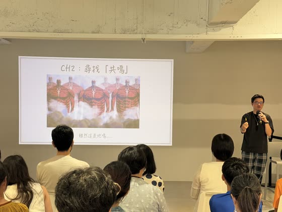
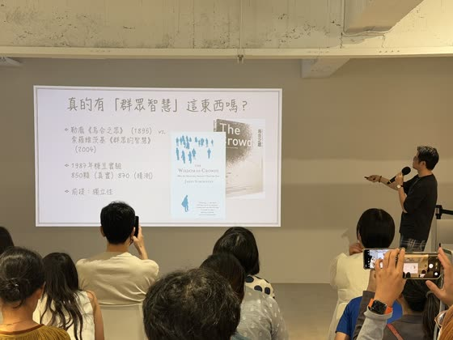
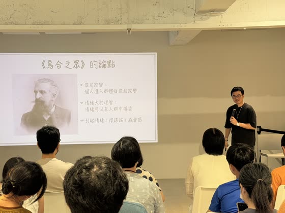
25 人的小酒館
照片是海獅先生自己去的啤酒館。納粹為什麼喜歡在啤酒館集會？因為需要人們在醉醺醺的狀態下聽演講。現在的造勢場合也一樣，希望群眾處於半迷魂的狀態——他問過政治圈的人，上台造勢是有技巧的，例如問「對不對啊？」預設的答案只能是「對」，沒有人會喊「不對」。「這是《我的奮鬥》創造出來的，我不指哪一個黨，因為每個黨都在做。」
戰後凡爾賽條約把一兩百萬德軍砍到十萬，為了不讓失業率太高，退伍軍人被派去做一些類似軍隊的事。希特勒接到的任務是去監視集會有沒有左派煽動的危險——他被派到一個只有 25 人的小黨。現場有人說慕尼黑跟柏林不一樣、應該加入奧地利，重視種族純淨的希特勒氣到跟對方吵起來；有人衝出來塞給他一本小冊子《我的政治覺醒》。
這個黨叫德國工人黨：聽起來左派，但「我們不是純粹的左派——左派只重視階級，我們有強烈的民族信念，同時又是窮人、工人」。希特勒突然想通一件事：傳統右派都是教授、中產階級，講話溫溫吞吞，不了解底層，所以引不起共鳴；一個「強烈民族信念＋屬於底層」的黨才是方向。隔天他就加入，成為第七號會員（「先交一下會費」），直接當上宣傳長，然後發現：我還蠻會演講的！
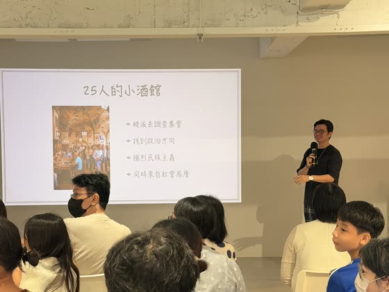
我還蠻會演講的！
右邊那張照片不是希特勒天生的樣子，是他演講前在鏡子前模擬的姿勢——海獅先生現場模仿了幾個，全場笑翻。那些肢體語言都是演出來的，背後有典故，「現在的人完全復刻不出來」。
回到剛才那位前立委的問題：狂罵算不算煽動？不算。因為大家還沒跟你進到同一個情緒，你在那邊罵什麼都錯，只會讓人覺得「又在發瘋了」。研究希特勒的演講稿會發現：煽動的本質不是負面的，反而有相當多正面詞彙。跟以前政見發表式的演講（你講你的、我講我的、下面一片安靜）完全不同。《我的奮鬥》裡有一句話，被今天的宣傳奉為圭臬：
簡單的人需要簡單的答案：是或否、對或不對、愛國或賣國、德國的或外來的。
希特勒《我的奮鬥》
那到底什麼是民粹？
藍罵綠、綠罵白，「你才民粹，你全家都民粹」。海獅先生引用普林斯頓大學一位教授的定義，說兩年後的總統大選可以拿它來判斷誰在走民粹的路：
民主
- 承認社會由很多不同的團體組成：勞工、無產階級、中產階級……
- 民主的任務是在這些團體之間商量出一條大家都能接受的路。
民粹
- 把世界分成簡簡單單的二分法。
- 一邊是低下、正直、一直在受苦的「我們」；另一邊是少數、特權、天大的「他們」。
民粹宣傳的演講邏輯很簡單：這個國家曾經非常美好，我們所有人共同奮鬥；然後有人來了，破壞我們幸福的敵人，就是「他們」。一開始「他們」指很多人——1923 年時還不是猶太人——重點是先把「我們」凝聚起來，再去找「他們」。
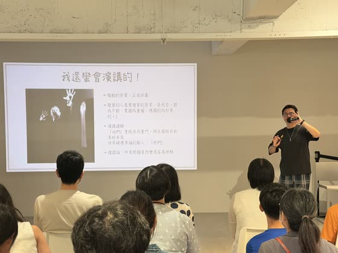
我們為何相信陰謀論？
「卡尼薩三角」：左邊你會看到一個三角形，右邊會看到一個正方形，其實都不存在。陰謀論就是這種感覺——我們的大腦拒絕「巧合」，認為凡事發生一定有意義、背後一定有一個邪惡陰暗的勢力在主導；解釋不了誰在主導，就說「這水很深」。這是人類最常見的認知誤區。但世界上很多事真的是巧合：下棋想三步就有上百種變化，現實變數更多，三步之後基本無法預測。
海獅先生說這是他最喜歡的一頁。有人問他怎麼看德國極右派 AfD，他的回答就是投影片這句：他們看到了問題，但把答案想得太簡單。德國經濟真的不好，AfD 說是外國人搶走工作；真正的問題是能源靠俄羅斯、汽車賣中國，兩邊現在都出狀況——這不是哪個政黨上台就能解決的，要整個產業轉型，太難了，所以把問題推給外來者最簡單。政治人物只要指出問題，大家就覺得好棒，沒意識到他把答案想得太簡單。
最省力的解法：把所有錯推給同一個群體。「天字第一號最倒楣的民族」——猶太人。
陰謀論 1：「背後一刀」
- 插畫：前面是英勇的德軍士兵，後面陰險的人捅刀，帽子上的星代表猶太人。
- 當時的認知：德軍無敵，戰敗絕不是軍事上輸了，是被左派、共產黨背叛。
陰謀論 2：猶太人統治世界
- 海報上猶太人前面的三面旗：美國、英國、蘇聯。
- 看起來兩邊打來打去，其實背後是同一個老闆（馬克思也是猶太人）。
納粹最神奇的地方：你不喜歡一個東西，不會想把它殺掉——「我不喜歡我老闆，我不會殺他，我只會辭職，辭職時還會說些好話」。納粹卻對所有國家說「把你們的猶太人交給我，我來集中處理」，這不符合人性。所以厭惡不是納粹對猶太人的情緒。是恐懼。
《錫安長老議定書》是 19 世紀從俄羅斯冒出來的一本書，說猶太長老開會決定暗中控制世界：用貸款控制各國財政、培植菁英代理人——這是一般民眾對猶太人的想像。納粹最神奇的是加上下半部：馬克思主義是猶太人製造社會對立的工具、普選權和民主是猶太人培養愚民對抗菁英的陰謀、言論自由也是，最後用娛樂和色情分散注意。從菁英到愚民，全世界都被猶太人控制了——如果這是你的世界觀，那你對猶太人不是單純的厭惡，而是深深感到自己遭到威脅。這種恐懼才是屠殺背後最重要的情緒。
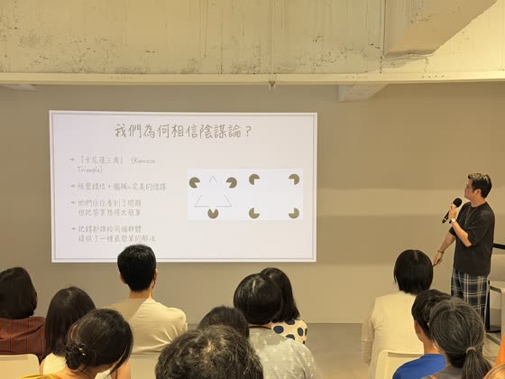
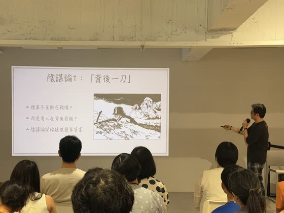
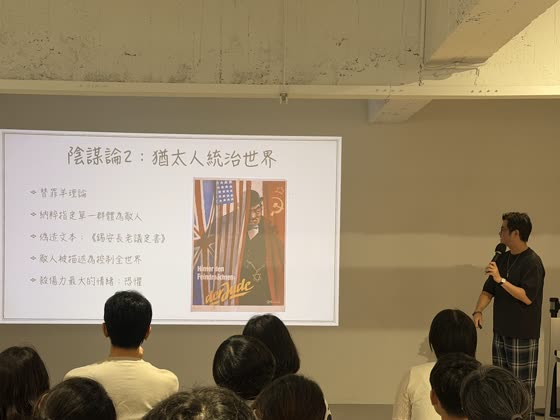
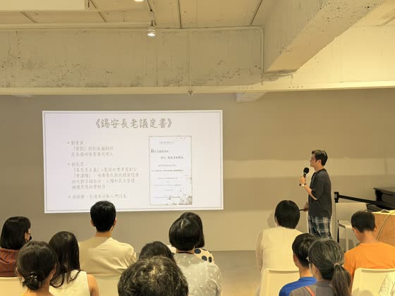
不公平的外部世界，與天賜良機
凡爾賽條約的賠款，是德國不吃不喝從 1918 年還到 1988 年才還得完的數字。第一年還了、第二年還了、第三年真的還不出來。（海獅先生 2010 年 12 月剛到德國時看到一個展覽：德國那一年才真的把一戰欠款還完。）英美覺得對德國太狠、要不要降一點，法國總理普恩加萊說：無論他人怎麼建議，法國絕不會放德國一馬。不還錢就直接占土地——1923 年進軍魯爾工業區。
德國沒辦法打仗，只能罷工，罷工造成史上最大通膨。海獅先生本來要帶當時的馬克鈔票給大家看，忘了帶；投影片是小孩拿 100 萬馬克面額的鈔票疊積木。他先問台灣：通膨到 15% 大家就覺得雞排好貴（昨天一塊 85 元，他大學時 20 元）；國民黨初期的台灣通膨約百分之一萬；德國當時是7,253 萬倍——今天一塊錢買到的東西，要 7,000 多萬才買得到。
這對人的意義：帳戶裡的錢連一天伙食都買不起。德國人跟台灣人很像，相信這輩子努力工作、努力存錢就會過好生活，結果一大堆中年人存了一輩子的錢一夕之間一文不值——他們覺得被騙了。
希特勒看到最大的機會：啤酒館政變。一場暴力事件，很快失敗。據說他走在前面跟大家手勾著手，警察一開槍他第一個逃走——「真的，這是歷史」（有人說他是被拉走的，反正是第一個離開現場的）。兩天後被捕，起訴叛國罪，最高死刑。
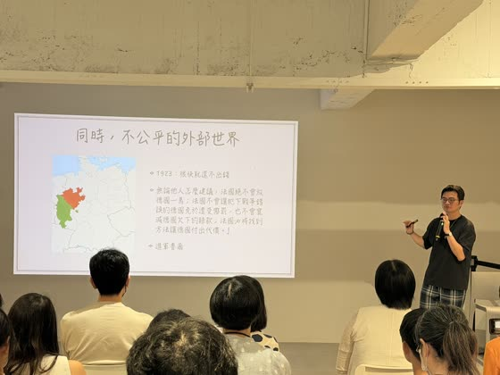
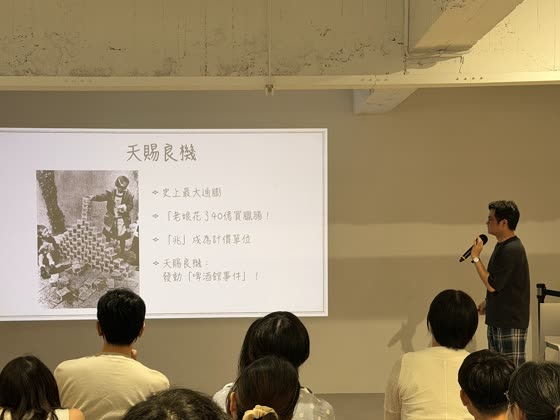
全國紅人
有人建議他用「我做了，但沒有顛覆國家的意圖」來辯護，他拒絕：反正會被判，不如把想講的一次講完。法官問他承不承認叛國，他說：
「對，沒錯，我一個人負全部責任！但我從來不認為自己是罪犯，因為我反對的是賣國賊——反對賣國賊，根本談不上叛國罪。」
1924 年慕尼黑審判
有人說你講這麼多，其實只是想撈個部長當吧？他哈哈大笑：「小人的眼界是多麼狹窄！我的目標從一開始就比做部長高出一千倍。我要做馬克思主義的摧毀者。」當時的右派深受觸動——從來沒有一個德國人站出來說要摧毀共產主義。最後兩段是對國防軍喊話：「國防軍不分官兵都將站在我們這一邊……原來的帽章會從污泥中撿起，原來的旗幟會在空中招展。我們準備面對上蒼最後偉大的判決，到那個時候，我們又將和好如初。」
按共和國的法律法官必須判他有罪，但他講的很多是當時法律人心裡暗暗支持的話，台下拍手拍成一片。他從慕尼黑的地方人物，經過審判和報章雜誌紅遍全國。叛國罪最高死刑，結果關了九個月，在獄中寫完《我的奮鬥》。
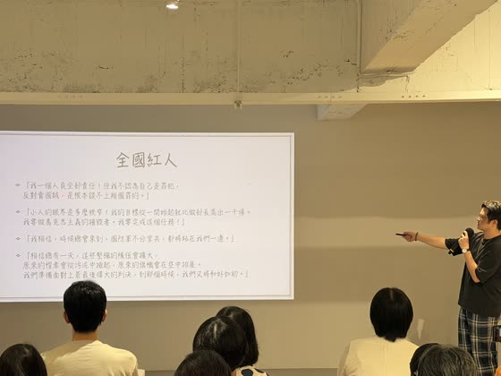
CH 3 · 1926 — 1933
重複、重複、重複！
好日子一來，末日救世主就沒人要聽。這一章講宣傳機器怎麼在不利的年代活下來，然後在 1929 年之後，用重複、衝突、科技和舞台設計，把一個邊緣政黨推成第一大黨。
戈培爾：不像日耳曼人的日耳曼主義者
投影片上的戈培爾，看起來像標準的日耳曼人嗎？不像。當時就有人這樣諷刺納粹高層：想成為偉大的日耳曼人，就要「像希特勒一般的金髮（他是黑髮）、像戈林一般的苗條（空軍總司令是個胖子）、像羅姆一般的純潔（衝鋒隊隊長是同性戀）、像戈培爾般的健壯（他一隻腳畸形，走路一瘸一拐）」。宣揚種族純淨的人，恰恰沒有一個符合純淨的標準。海獅先生順帶提到 AfD 的女黨魁，按他們自己的標準也不符合——她是公開出櫃的同性戀者。
1926 到 1929 年被納粹宣傳成「不利年代」。通膨之後美國怕德國內亂，提出援助（道斯計畫、楊格計畫）：我貸款給你，你用工廠生產、賣了錢再還我，非常合理。德國經濟蒸蒸日上，進步的象徵之一是裙子——《唐頓莊園》第一季裙子拖地、不能露腳踝，最後一季已經到膝蓋；1920 年代 Coco Chanel 的小黑裙，所有年齡、階級都能穿。大部分德國人很開心，唯獨納粹不開心：末日救世主全部消聲匿跡。
納粹本來在南邊的慕尼黑，要往北發展，派去柏林的就是戈培爾。「這個人我實在很不想講，但他是文科博士」——海德堡大學（海獅先生當年也很想考）的文學哲學博士，想靠寫小說維生，所有出版社都退稿。「一個畫家一天到晚被拒絕，一個小說家一天到晚被拒絕，你們這些機構能不能給這些人一點機會？」在德國拿到博士是可以刻在門牌上的事（他讀書時看過人家門口寫 PhD 1879），千辛萬苦拿到博士卻連小說都出不了，極度自卑變成滿腔憤恨，接觸極端的納粹信仰。
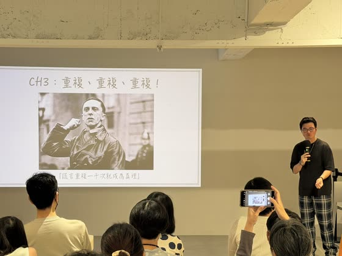
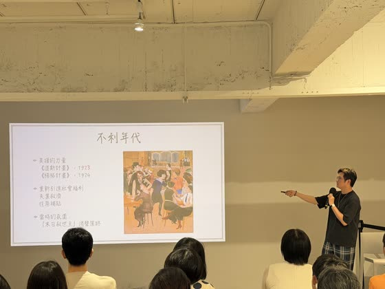
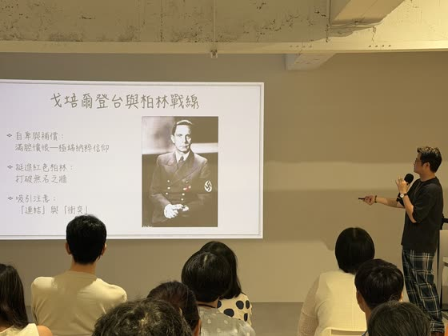
打破無名之牆：連結與衝突
柏林沒人認識納粹。戈培爾說：三年之內打破無名之牆，現在 600 人，三年後 60 萬人。海獅先生說「連我一個歷史網紅都很想學一下」，他用了兩招：
- 連結（這招可以學）：一個網紅只在自己的頻道講，成長很慢；最快破圈的方法是跟不同的人聯名。海獅先生舉的例子是兩天前沈伯洋上了另一位主持人的節目。
- 衝突：現在很多網紅在做的「同行互嗆」也是這個邏輯（他順便虧了另一位知識型網紅：「他不敢嗆我，我的歷史聲量比較高」）。
戈培爾的衝突版本：帶著衝鋒隊深入共產黨最核心的地盤辦造勢，還事先大肆宣傳幾月幾號要去。共產黨說「有種就過來」，真的去了，大打出手，大量流血。最快破圈的就是血腥，大家喜歡看衝突。他把 12 個受傷的隊員抬上台，發表「無名衝鋒隊員」的演講，當天晚上收到 2,000 份入黨申請。今天沒辦法用打架（當時一戰剛結束，大家習慣重口味），但底層邏輯一模一樣：靠衝突不斷吸引知名度。
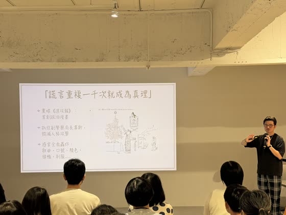
「謊言重複一千次就成為真理」
怎麼快速重複？戈培爾創辦黨報《進攻報》，首創政治漫畫——到現在很多人還在做，很諷刺，對支持者煽動性十足。他盯上討厭納粹的副警察局長韋斯（猶太人），漫畫畫他用納粹黨員裝飾聖誕樹，毀滅式的人格攻擊。韋斯去告，沒用，當時沒有法律禁止政治漫畫。後來把韋斯畫成一頭驢，韋斯告上法庭，戈培爾說「這只是一幅插畫，我們沒有言論自由嗎？」法官看那驢子頭上明明就是韋斯博士的帽子——海獅先生說結果「非常非常厲害」，法官認定的是驢子長得像韋斯。
希特勒靠演講，戈培爾靠其他一切：朗朗上口的歌曲、口號、姿勢。那個平舉的手勢有專有名詞叫「羅馬式敬禮」，搭配的口號是 Sieg Heil，勝利萬歲。正確做法不是一個人喊——口號最重視互動：帶頭的人說「向領袖三呼萬歲」，前面喊 Sieg、全場喊 Heil，在密閉空間裡轟動全場，讓所有人覺得自己是同一個群體。他放了電影《英雄教育》（Napola）納粹菁英學校入學典禮的片段：校長講完話，全體 15、16 歲的少年三聲萬歲。「所有人一起喊出很大聲的那個音，你在那個空間裡真的會感受到震撼。」全世界只有德文做得到——只有德文能把「勝利萬歲」融成兩個單音節的詞，日本人後來學了，還是差那麼一點。「我的歷史普及人生可能到此結束，大家不會出賣我吧？」
1929：末日開端
不斷重複，終於等到 1929 年時來運轉——對納粹來說。海獅先生說要用台股做一次震撼教育：兩年前他在一萬四千多點進場（還覺得自己進晚了），現在四萬八千點。1920 年代的美股也是這樣一直漲，經濟學家預測永遠不會跌。然後 10 月 19 日第一次下跌；21 日跌 16%——台灣 6 月那次 48,000 跌到 46,000，跌 8、9% 大家就覺得世界末日了，台股跌停最多 10%，這是第一天就 16%。週末停頓、政府小小救市；24 日黑色星期四換手 1,289 萬股；25 日只小跌 3%。
「新手股民的戰場」：第一天狂跌、第二天小跌，週一你會大買進場還是出手？台灣人習慣說「跌了都是進場時光」——恭喜你，28 日道瓊再跌 13%，等於台股再跌兩千多點，最糟的是政府和銀行家沒有一個人出來救市；29 日再跌 22%，沒跌停板的情況下等於一天跌 8,000 點。能逃的只有 24 到 29 日這四天，接下來兩年美股跌掉 97%。「48,000 點剩 8,000 或 5,000 點，你覺得台北市的頂樓上會聚集多少人？」要漲回 1929 年的水準，是二十多年後的 1950 年代。
德國經濟全靠美元撐著，美國打噴嚏、德國重感冒：失業從 67 萬變 600 萬，十倍。海獅先生描述一個畫面：週末的啤酒館人山人海，一個人進來點了一杯啤酒一飲而盡。不正常的地方是——600 多人裡只有他有錢買那一杯，其他人十個人合點一包花生，看著他喝。希特勒一聽大為振奮：「這是我人生中最美好的東西。」
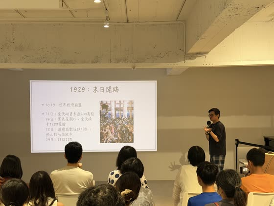
震撼表演：1932 年的造勢晚會怎麼設計
希特勒的演說加上戈培爾的戲劇化，凝結成 1932 年一場最大型的造勢。海獅先生用問答帶大家拆解：
- 早上、中午還是晚上？ 晚上。觀眾答「意識不清醒」「燈光」。《我的奮鬥》裡寫過白天演講效果很差，人是反抗型的；晚上疲累，台上動作激昂、語氣興奮，台下就「對！沒錯！」。這場晚上八點開始，下午五點場內 12 萬人已坐滿，外面還擠了 8 萬。
- 主講者在前、中、後？ 後。前面是歌舞、歡樂的暖場，然後次要角色先講幾個政治笑話嘲笑對手（「韋斯局長……」），一切都預演好，目的是讓群眾越來越「笨」。這場的次要角色是戈培爾：「這 13 年你們讓國家變得這麼爛，外面的人一直欺負我們，你們有什麼臉站在我們面前，對不對？」台下「對！」氣氛越來越高，然後他下台，一片空曠，所有人靜靜等主角。
- 怎麼進場？ 海獅先生先問台灣近十年誰進場最好，他自己的答案是韓國瑜——「姑且不論政治理念」：從後面進場，200 公尺走 20 分鐘，一路握手打氣，走上台那一瞬間下面群情沸騰；蔡英文則是直接走上台，演講刻意冷靜，不會激情到情緒。
希特勒更厲害：從天上來。這就是「希特勒飛越德國」（Hitler über Deutschland），海獅先生說是德國政治史上最經典的一件事，戈培爾想出來的。萊特兄弟發明飛機才二三十年，其他政治人物還在坐馬車，他租飛機一兩個月內跑了 104 場造勢，還拍了看著窗外德國大地的宣傳照——唯一一個關心整個德國的人。想像那個畫面：漆黑的夜空傳來引擎聲，越來越大，飛越 20 萬人上空的那一瞬間全場起立敬禮高喊萬歲；飛機停在旁邊的停機棚，他站上敞篷車，在狂熱的歡呼中走進來，開始那場載入史冊的演講。
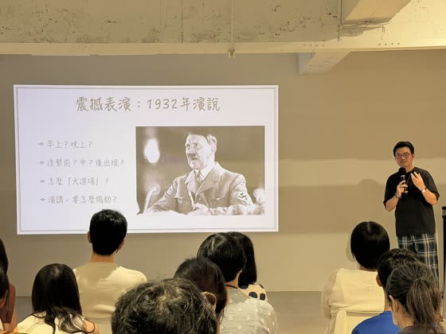
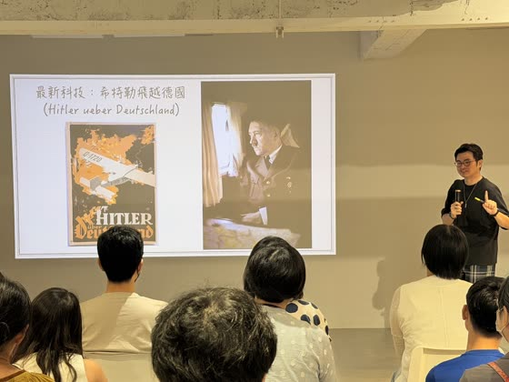
演講稿分析
「這一頁文字最多，但全台灣只有我有」——德文演講稿是海獅先生從德國扛回來自己翻的。它不是用罵的，罵只會讓沒有共鳴的人覺得你是不是傻的。他一開始講話很小聲：全場亂轟轟，大家要很專注才聽得到，然後情緒越來越激動。
1. 數落對手的不是
- 「命運給了當今掌權者超過十三年的時間來整頓德國。但他們失敗了……三分之一的德國男女失業；帝國、各社區和各州負債累累；財政一片混亂；國庫空空如也！」
- 海獅先生：像「高雄三千個天坑」，大家不用在乎是真是假，聽起來就是一切非常混亂。
2. 對方想分裂，我們才想團結
- 「十三年前，我帶領七個人開始了德國統一的事業，如今，我們已經超過一千三百萬人！……不是因為我們是巴伐利亞人或普魯士人，不是因為天主教徒或新教徒，不是有錢人或工人——只因為我們共享一個身份：德國人！」
- 海獅先生：這一段才是最重要的。
民粹在宣傳上確實有優勢：它能把所有不同的群體凝結在一起。但它天生帶著一個風險——必須找一個「他們」來恨。希特勒整場沒提猶太人；他下台後有人領口號：「誰害我們如此不幸？——猶太人！希特勒是誰？——我們的救星！我們最後的希望！」軍樂聲中，戈培爾放出他最厲害的一招：舞台上三道紅光，配上黑夜——黑與紅，納粹的顏色。1932 年選舉，納粹躍升第一大黨；1933 年，希特勒成為總理。
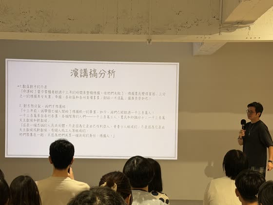
光之大教堂，與一道涼徹脊髓的寒意
1933 年之後，他們繼續做同一件事：創造「萬眾一心」的感覺。紐倫堡蓋了 50 萬人的集會場，海獅先生站上去過——「不要再跟我說凱達格蘭大道了」，你根本無法想像 20 萬人站在一起是什麼場面，而他們辦到了。希特勒突發奇想：能不能讓 20 萬人晚上也聚在一起？建築師施佩爾想到借德國空軍的探照燈往天上打，就是 1938 年的光之大教堂。想像你身處其中——個人不重要，重要的是團體。
再往前一點，1933 年 1 月 30 日希特勒就任總理當晚，衝鋒隊的火炬遊行穿過布蘭登堡門。當時的知識分子哈夫納在《一個德國人的故事》裡寫：
「一道涼徹脊髓的寒意。……我似乎聞到了希特勒那個傢伙身上散發出來的血腥與污穢的臭味。」德國人仍盡力維持著一切如常的表象，當晚他去了一場派對：「我彷彿與這幾千名衣著光鮮的年輕人共同被關在一艘大船裡面。船身正在劇烈搖晃擺動，而我們卻在最偏僻、有如鼠穴般的船艙內縱情歡舞。可是頂層的駕駛室已經有人決定引水灌滿船上的那個部位，讓其中的一切全部溺斃，管他是人還是老鼠。」
哈夫納《一個德國人的故事》，投影片引文
威瑪共和逐漸死亡，第三帝國逐漸興起。
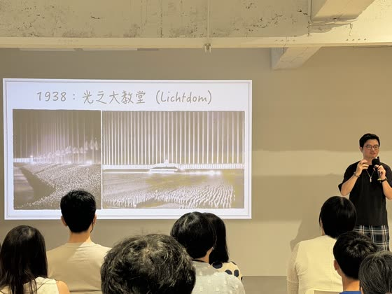
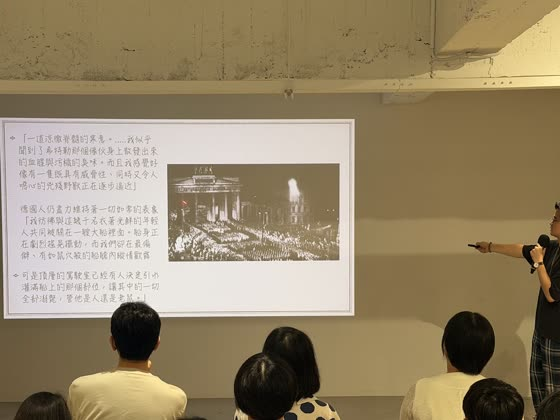
CH 4 · 結論
我們如何識別危險？
「大家不要緊張，我沒有要宣揚什麼政治，我想告訴大家的是我們如何去識別、如何去改變。」最後一張投影片放的是台灣：許信良、陳水扁、韓國瑜。海獅先生說的不是誰是誰，而是：手法是通用的，而台灣有一個天生的武器。
民粹三大特徵
怎麼認出來
- 訴諸「我們」與「他者」：受苦的我們、該死的敵人——簡簡單單的二分法
- 把所有問題歸因於單一敵人
- 製造極端焦慮
面對民粹的武器
怎麼拆
- 解構神聖光環——把「救世主」放回凡人
- 幽默消解狂熱——台灣天生的歡樂
我們能從中學到什麼
怎麼做
- 警惕簡單解答：很多人都看得到問題，要注意他提供的解答是什麼，太簡單就要小心
- 永遠擁抱多元：性別、職位、階層不同，都可以活在這片土地上
台灣選舉的歡樂，是天生的優勢
有人說台灣選舉很亂，海獅先生覺得恰恰相反，這是台灣選舉最好的地方。1977 年中壢事件，大家想到的是作票、推翻警車，沒人想到黨外的許信良競選時用的主調是歡樂——戒嚴之中，必須把選舉打造成遊樂園、嘉年華，才沖得散恐懼。這為台灣之後所有選舉定了基調：在台灣，快樂才最出圈。1994 年陳水扁第一次挑戰台北市長，標語是「快樂、希望、陳水扁」；2018 年韓國瑜選高雄，看起來很兇，其實在高雄很草根、很歡樂。
所以如果有人要在台灣用民粹、用仇恨動員，台灣天生的歡樂程度就是最好的解藥：用幽默消解狂熱。
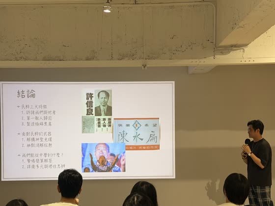
Q & A
現場問答
第一題是開場後、進第一章之前問的；結尾主持人說因為時間關係快速開放三個問題。
納粹為什麼選紐倫堡辦黨代會？
在納粹的想像裡，紐倫堡是「最原汁原味、最日耳曼」的中世紀城市——尖頂屋、城牆，全德國唯一還有九成城牆完整保存的地方。海獅先生順便講了《進擊的巨人》：全德國只剩紐倫堡和諾德林根兩座這樣的城牆城市，作者選了諾德林根當原型。現在整座小鎮都是巨人塗鴉，他 2025 年第一次去時當地人超不爽（為什麼一個日本漫畫……），2026 年上個月再去，已經開始賣周邊了。
民主得來不易，為什麼人卻很難珍惜它？
人會珍惜一個東西，是因為自己努力追求過；直接得到的，就不會覺得珍貴。但海獅先生說他不會用「民主負債」這類說法。他以前是高中老師，聽了很多學生的想法之後最深的感覺是：年輕人不是因為看了抖音就覺得台灣的民主不重要。年輕人討厭的，反而是「我們這一代三、四十歲的人」——看到下面的人在看抖音，就覺得他們是不是要開始抗拒民主、覺得台灣很糟。把他們推遠的，反而是我們。
一般德國人為什麼會接受「都是猶太人的錯」？
（問題本身錄得很小聲。）海獅先生的回答：對當時的人來說，把所有錯推到猶太人身上「沒什麼不好嗎？反正我又不是猶太人」。而且猶太人只佔德國人口的百分之一，絕大多數德國人根本不認識猶太人，身邊沒有真正的猶太朋友——所以希特勒和納粹黨非常容易把一切推給一個想像出來的敵人。
為什麼希特勒自稱「第三帝國」？
他最想表達的東西是「恢復日耳曼的榮光」。德國前面有兩個帝國：中世紀的神聖羅馬帝國（後來被拿破崙毀掉）是第一帝國，一戰時的德意志帝國是第二帝國，所以他自稱第三帝國，要恢復德意志最強盛的樣子。海獅先生說，今天世界上不少主宰者好像都很想恢復自己「以前最強大的那個時候」；他聽過一句很有道理的話：用 21 世紀的資源，打一場 20 世紀的戰爭，為了恢復一個 19 世紀的帝國。但從歷史學的角度，他們想像的那個國家從一開始就沒有那麼強盛——神聖羅馬帝國那句名言大家都知道：既不神聖，也不羅馬，更非帝國。
之後是合照時間。
✦ 9 月 12 日，下午
爸爸帶大兒子去聽
這天全家從台中搭高鐵上台北，上午在南港開會，下午拆成兩路：媽媽帶弟弟去袖珍博物館，爸爸帶哥哥來聽這場。兩個半小時對小三的孩子不算短，但海獅先生講故事的方式——舉手投票、猜出生地、模仿希特勒的姿勢、《進擊的巨人》和《西線無戰事》——讓他撐完全場。五點在松江南京會合吃晚餐。
ALBUM
投影片相簿
依拍攝順序，共 39 張。點開可以放大、左右切換。
MENTIONED
講座裡提到的書與影片
- 茨威格《昨日世界》——第一章的一手史料來源
- Netflix《西線無戰事》——一戰壕溝的樣子
- 希特勒《我的奮鬥》——多段引文，海獅先生說很多手法都是這本書「創造出來的」
- 勒龐《烏合之眾》／索羅維茨基《群眾的智慧》——第二章的兩本理論書
- 電影《英雄教育》（Napola）——納粹菁英學校的入學典禮
- 哈夫納《一個德國人的故事》——「一道涼徹脊髓的寒意」
- 《唐頓莊園》——裙子從腳踝到膝蓋，1920 年代的進步象徵
- 海獅先生自己的書：《海獅說歐洲趣史》